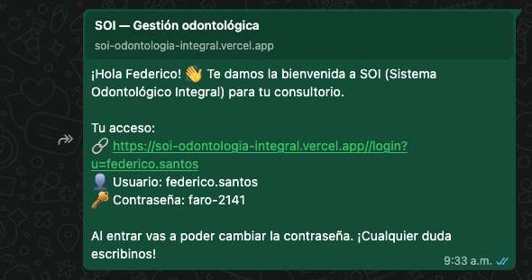
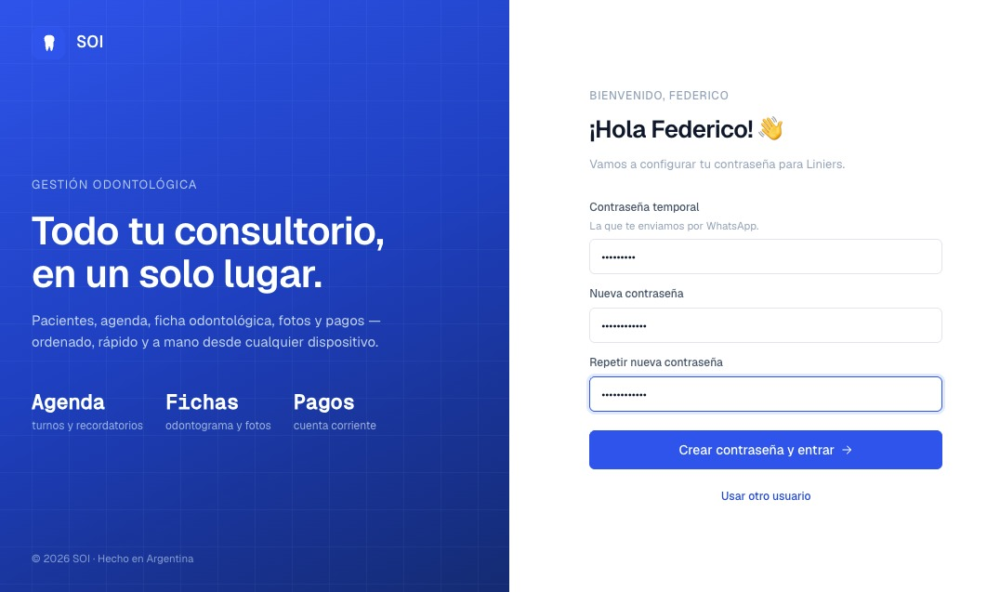
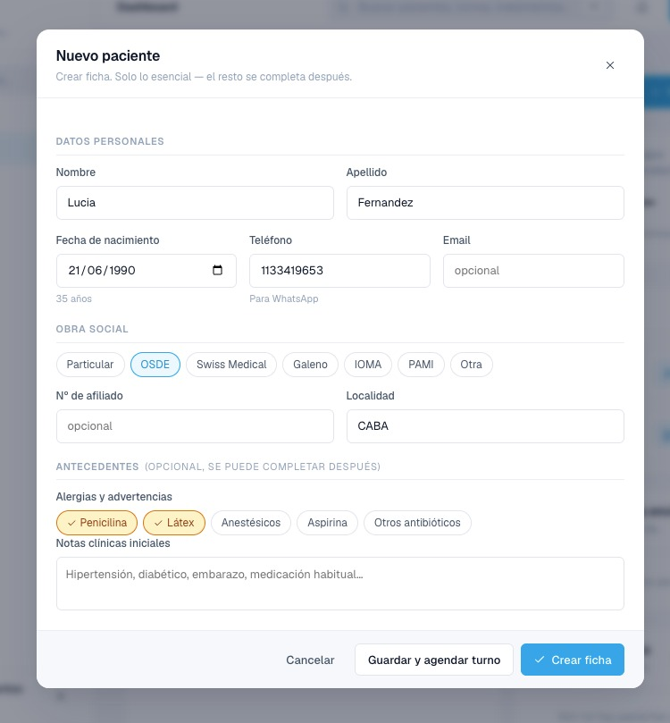
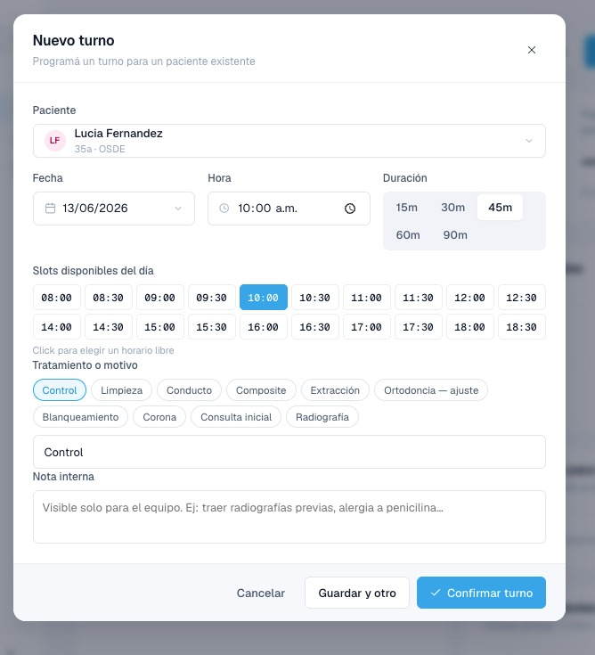
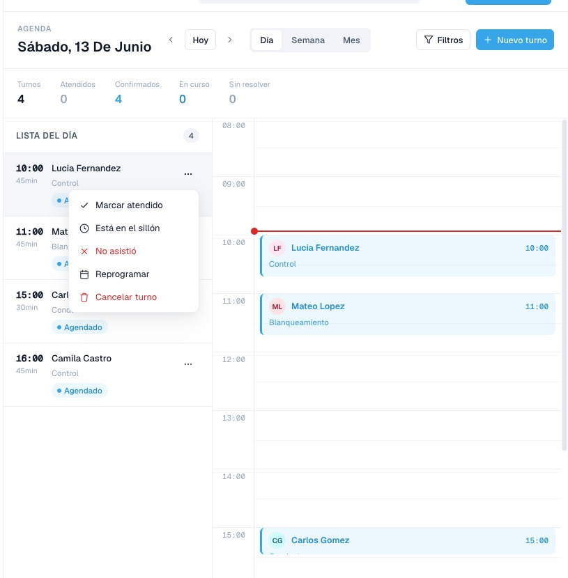
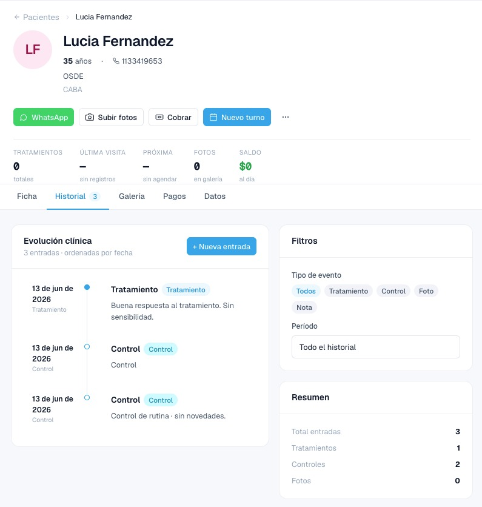
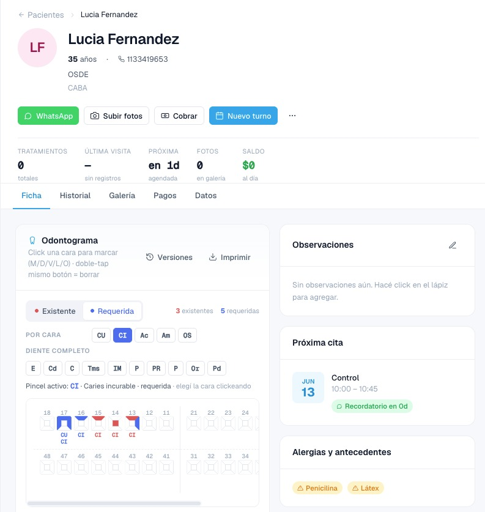
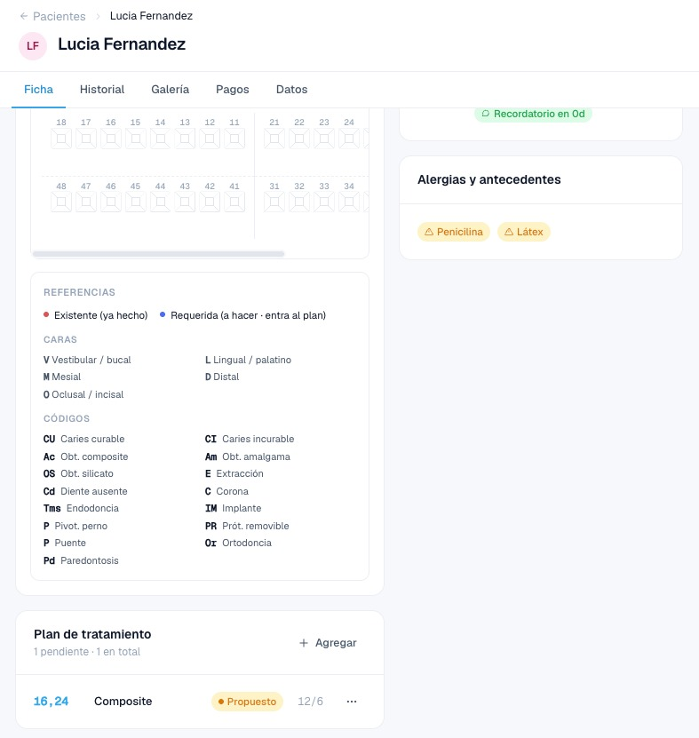
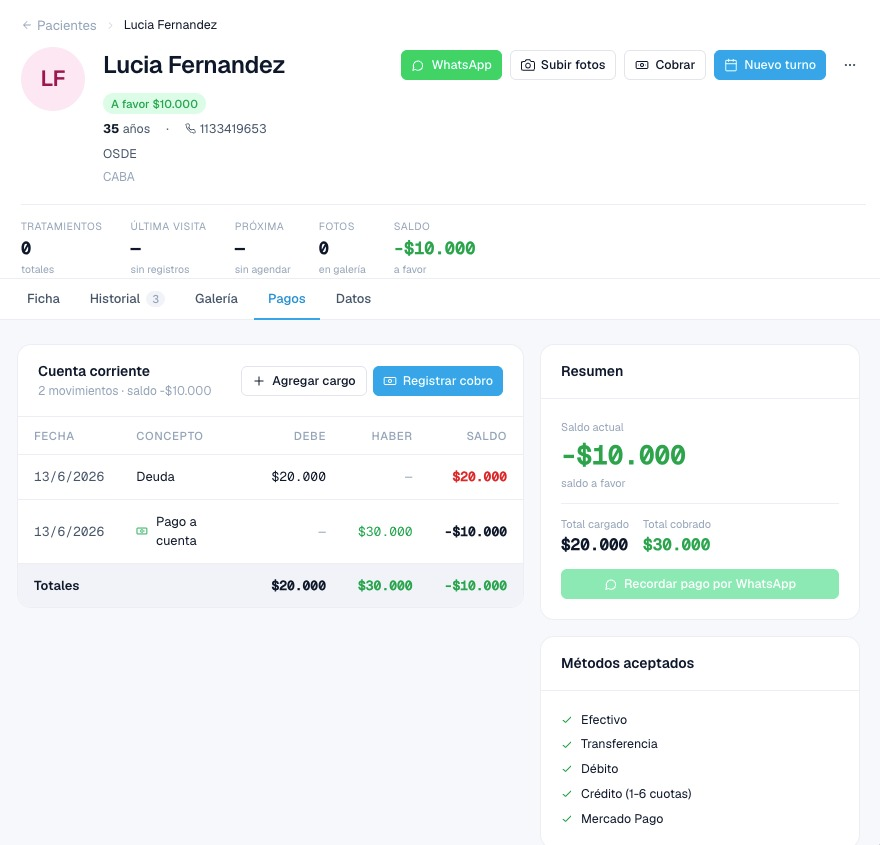
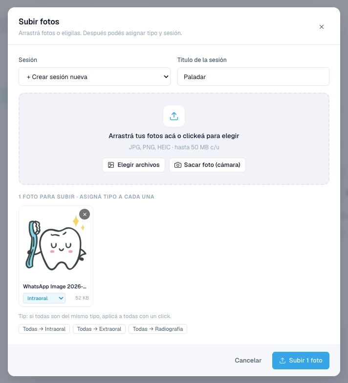

🦷
SOI — Guía rápida
Sistema Odontológico Integral · cómo usar tu consultorio, paso a paso.
soi-odontologia-integral.vercel.app
Para exportar a PDF: abrí este archivo en el navegador → Imprimir (Ctrl/Cmd + P) →
Destino “Guardar como PDF”.
Paso 1
Activá tu cuenta
La primera vez, desde el mensaje que te enviamos por WhatsApp.

Abrí este link

Crear contraseña y entrar
- Abrí el link del WhatsApp.
- Ingresá la contraseña temporal (la del mensaje) y elegí una contraseña nueva (mínimo 8 caracteres).
- Tocá Crear contraseña y entrar.
- De ahí en más, entrás a la misma pantalla con tu usuario y contraseña.
Paso 2
Tu tablero
Lo primero que ves: turnos del día, fichas y pagos pendientes, y accesos rápidos.
- En el menú de la izquierda están Agenda, Pacientes, Galería y Pagos.
- Las Acciones rápidas te dejan crear un turno, un paciente o cobrar en un toque.
Paso 3
Crear un paciente
Desde Pacientes → Nuevo paciente. Solo lo esencial.

Fecha de nacimiento
Crear ficha
- Cargá nombre, apellido y teléfono.
- La fecha de nacimiento calcula la edad sola.
- Tocá Crear ficha — o Guardar y agendar turno.
Paso 4
Agendar un turno
Desde la agenda o desde la ficha del paciente.

Elegí el paciente
Confirmar turno
- Elegí el paciente, la fecha, la hora y el motivo.
- El recordatorio por WhatsApp se manda 24 hs antes.
- Tocá Confirmar turno.
Paso 5
Atender un turno
En la agenda, en el turno tocá el menú ⋯.

Marcar atendido
- En el turno tocá ⋯ → Marcar atendido.
- Queda un aviso “Ficha pendiente” hasta que documentes la visita (paso 6).
Paso 6
Cargar la evolución
En la pestaña Historial. Queda en la historia clínica con fecha.

Nueva entrada
- Pestaña Historial → + Nueva entrada.
- Elegí el tipo (Tratamiento / Control / Foto / Nota), escribí la nota — o tocá una frase rápida.
- Tocá Guardar entrada. ✅
Paso 7
Odontograma
En la pestaña Ficha. Cada diente tiene 5 caras clickeables.

Click en una cara del diente
- Elegí Existente (ya hecho) o Requerida (a hacer) y el código (caries, corona…).
- Hacé click en la cara del diente para marcarla.
Paso 8
Plan de tratamiento
Debajo del odontograma. Cargá las prestaciones con su precio.

Agregar al plan
- Tocá + Agregar y cargá la prestación, el/los diente(s) y el precio.
- Al terminar el tratamiento, marcá el ítem como Completado → se genera el cargo en la cuenta del paciente.
Paso 9
Cobrar y recordar pagos
Pestaña Pagos: cuenta corriente simple, con recordatorio por WhatsApp.

Registrar cobro
Recordar por WhatsApp
- Registrar cobro (monto + método). El saldo se ajusta solo.
- Si el paciente debe, tocá Recordar pago por WhatsApp: el mensaje sale listo, vos confirmás.
Paso 10
Fotos del paciente
Galería por sesiones, con comparación antes/después.

Elegí o sacá la foto
Subir
- Tocá Subir fotos (o la pestaña Galería → Subir).
- Arrastrá las fotos o tocá Elegir archivos / Sacar foto.
- Asigná tipo y una sesión → Subir.
¿Dudas? Escribinos por WhatsApp y te ayudamos. La idea es que uses SOI todo el día sin trabarte. 🦷